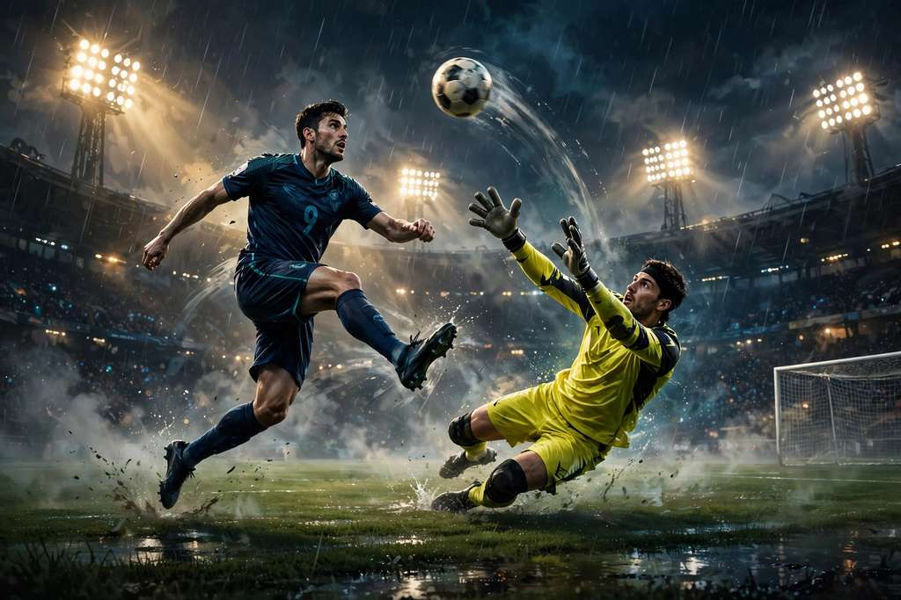

Your face stars in a 15-second reimagining of a famous goal — chip the keeper, evade the defenders, and score. No timeline. No keyframes.
Make your goal video See how it worksOne-time credit packs · no subscription · exact prices shown at checkout
One adult, a clear face, and the outfit you want to keep. A full-body photo gives the model more to work with.
Pick a scene and resolution — 720p or 1080p. The template handles the action, length and portrait framing. Review the credit quote.
Follow the task in My videos. Check the face, action and audio, then download your finished clip.
The complete-goal template supplies the action reference. The play, in four beats.
Lift it over the rushing keeper.
Let the defenders commit.
Keep the ball. Keep your composure.
Put the whole story in the net.
Watch the chip, the pause and the finish — video examples show different characters performing the play. Your photo and AI result will differ.
15s · portrait · silent
15s · portrait · silent
14s · portrait